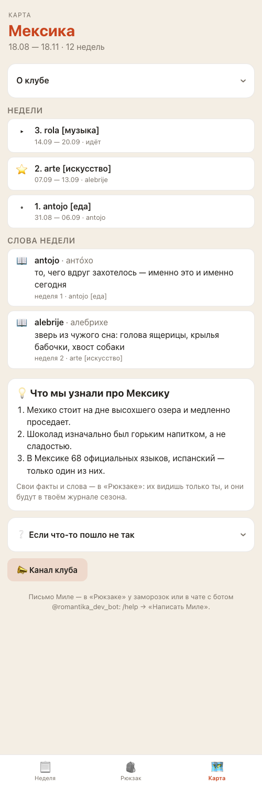
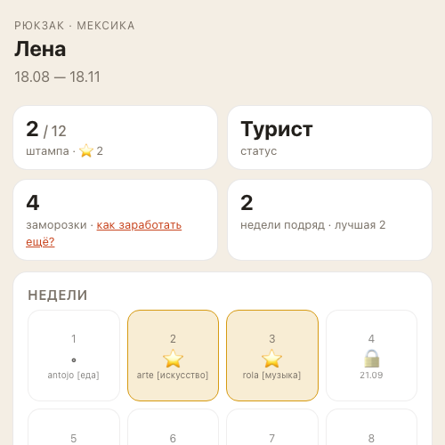
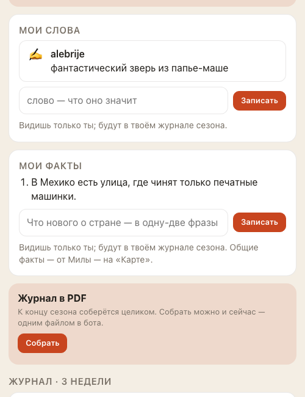
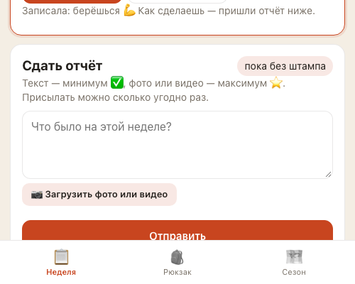
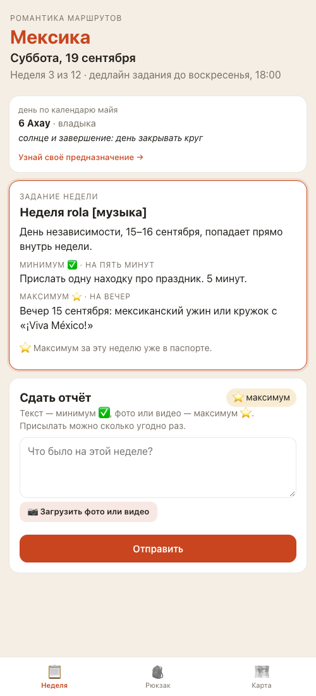

«Карта» и уборка — что изменилось
Второй список правок за 19 сентября — тот, что ты надиктовала вечером, посмотрев выкаченную версию. Здесь всё, что сделано, и один вопрос, который я отложила.
Что увидят люди: было → стало
Ответ бота на отчёт
| Что приходило и что приходит | |
|---|---|
| было | ✅ Записала как минимум — штамп за неделю «rola [музыка]». В воскресенье покажу общие итоги. |
| стало | ✅ Записала как минимум — штамп за неделю «rola [музыка]». |
| было (напоминание в четверг) | …Даже минимум на пять минут считается. Вечером покажу общие итоги. |
| стало | …Даже минимум на пять минут считается. |
Ты сказала: сейчас показывать почти нечего, а если людей станет много — всех всё равно не покажешь. Обещания больше нет нигде.
Третья вкладка


Заморозки и журнал в «Рюкзаке»


Вкладка «Неделя» без «Моих отчётов»


Факты про Мексику — уже в боте
Ты сказала добавить самой — взяла из твоего Notion, из строк, помеченных как вышедшие постами, и вписала через «⚙️ Мила» → команду «факт». Сейчас в клубе шесть:
- Ацтеки называли себя мешика — отсюда «Мексика».
- Испанский в Мексике принесли учительницы, а не конкистадоры.
- На гербе — орёл со змеёй на кактусе: так ацтеки нашли место для Теночтитлана.
- Испанский — не единственный: в Мексике живы 68 индейских языков.
- Миру Мексика дала кукурузу, какао, чили, ваниль и помидоры — а ещё цветное ТВ.
- Шоколад здесь пили горьким и с перцем, а не сладким.
Любой можно убрать: «⚙️ Мила» → «🗑 Убрать факт», или в панели «⚙️ Мила» на телефоне → «Ещё» → «Факты». На снимке «Карты» выше видны другие факты — он сделан на стенде, где живут придуманные участницы и придуманные факты; у людей в клубе — те шесть, что в списке.
Что проверено и как
| Кто | Что делал | Итог |
|---|---|---|
| Автоматические проверки | Стиль кода и 539 автоматических тестов (было 538) | зелёное |
| Помощник по коду | Два круга по каждой изменённой строке | проходит; нашёл мою ошибку — бот после отчёта звал «в список ниже», а списка на экране уже нет. Исправила. Ещё пять таких мест — тоже |
| Помощник по экранам | Щёлкает бота и приложение: шесть правок, злые сценарии, чтение служебных записей | идёт |
Что дальше
Выкачу, как только помощник по экранам даст добро — ты сказала не ждать отдельного слова.
Отложенный вопрос — архив сезонов. Ты говорила про «папки»: чтобы можно было зайти в Мексику, а потом в следующую страну. Это заметная работа, и решать надо не на бегу: где живут прошлые сезоны (в приложении или отдельной ссылкой), видно ли чужие страны тому, кто пришёл позже, что делать с журналами прошлых сезонов и как всё это не превратить в склад. Заведу отдельной задачей — обсудим, когда будет время.
Если что-то не понравится — напиши, верну как было за десять минут.
После выкатки посмотри с телефона: «🎒 Открыть клуб» → третья вкладка «Карта» (сверху «О клубе»), «Рюкзак» (кнопка PDF сверху, заморозки одним числом), и пришли боту любой текст — в ответе больше нет обещания итогов.